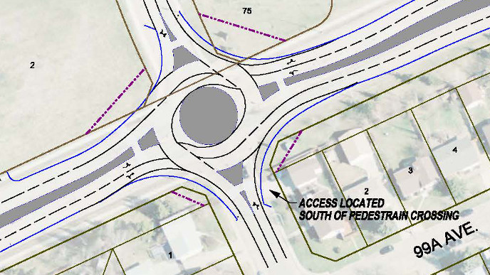
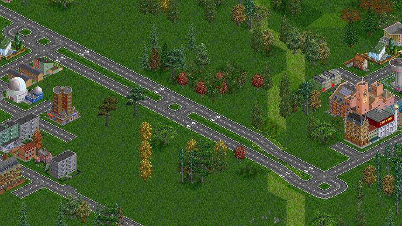

Lots of the Stuff I’ve Done.
Over the years, I’ve worked on a number of projects, both online & off. This is meant to link to some of the more exciting ones, particularly those found online.
Highway Planning
 Proposed Roundabout on Highway 642 in Morinville
My highway planning is all done offline, but I’ll provide links where I can.
- Highway 642 Functional Planning Study — 2012-13, Morinville, AB — Traffic forecasting and modeling, prepared proposed corridor treatment, public open houses (link)
- Mildred Lake Traffic Impact Analysis (TIA) — 2012-13, RM Wood Buffalo, AB — Analysing traffic counts, traffic modeling, traffic projections, and intersection treatment warrants
- Avenir / Cassidy Lands / St Albert Sports City — 2012, St Albert, AB — traffic modelling and intersection analysis
- Bellamy Hill TIA — 2012, Edmonton, AB — Site traffic generation and site access requirements
- Grove Drive & Pioneer Road — 2012, Spruce Grove, AB — Preliminary roundabout design and analysis
- Grove Drive & Spruce Village Way — 2012, Spruce Grove, AB — Intersection level of service analysis and pedestrian crossing control warrant analysis
- Grove Drive & Spruce Ridge Road — 2012, Spruce Grove, AB — Intersection level of service analysis
- Queen Street & Jespersen Avenue, Queen Street & Church Road — 2012, Spruce Grove, AB — Intersection level of service analysis
- Highway 16 & Campsite Road Interchange — 2012, Spruce Grove, AB — traffic volume forecasts
- Highway 14 Passing Lanes — 2012, Alberta Transportation — Public open house
- Meadow Hawk Estates — 2012, Strathcona County, AB — Traffic modelling and intersection treatment warrants
- Ardrossan Lands — 2012, Strathcona County, AB — Traffic modelling and intersection treatment warrants
- Highway 2 Functional Planning Study (North of Morinville to North of Clyde) — 2012, Alberta Transportation — Access management and cost estimate
- Taylor Drive — 2011-12, Red Deer, AB — Traffic forecasting and Synchro modeling for proposed geometric improvements
- Highway 11 (East of Rocky Mountain House to West of Sylvan Lake) — 2011, Alberta Transportation — Preliminary geometric assessment, field work for report preparation
- Highways 13 & 21 Roundabout — 2011, Alberta Transportation — Synchro modeling of the roundabout, AutoTURN modelling, Public open house
- Tomlinson Acreage — 2011, Strathcona County, AB — Traffic Impact Analysis
- Provo Towne Centre Site Redevelopment — 2010, Provo, UT — Traffic Impact Analysis for proposed mixed use redevelopment
- US-6 & US-89 Junction — 2010, Spanish Fork Canyon, UT — Drafting and design of proposed alignment for highway twinning
- Highway 1 (East of Calgary) — 2008, Alberta Transportation — Functional Planning Study, traffic forecasting and alternative routings developed
- Highway 28A — 2008, CFB Namao, AB — Traffic counting
- Highways 2A & 616 — 2008, Kaynaugh, AB — Traffic counting
- Highways 2 & 3 Urban Bypass — 2008, Fort MacLeod, AB — Traffic forecasting and modeling
Web Design
- Minchin.ca — Bootstrap Edition — 2014 — in the 7 years since I originally designed the site, one of the biggest changes is that so much of the web in now accessed through smart phones. So this redesign was in large part abour making the site look good on my phone.
- Metro Financial Planning — 2011-12 — A professional project. This is a wordpress driven site for a local financial planner. I set up the site and maintain it, and set up his email.
- Matthew Bissett for PC MLA — Sherwood Park — 2011 — A wordpress driven site for a friend running for nomination for the PC party in his riding. I set up the site and he provided the photos and copy.
- Minchin.ca — Kwick Edition — 2010 — This just went live for the main page of Minchin.ca. I realize that it may not be obvious where the links are or what they do at first glance, but I love the effect.
- Minchin.ca — Rounders Edition — 2007 — This version of Minchin.ca was the first to go live. It was based on the Blogger template I was using at the time, but includes a picture I took in Hawaii as the header background.
Programming
 WmDOT in action
- WmDOT — 2010-14 — An AI for OpenTTD, an open source remake of Transport Tycoon Deluxe. My AI is written in Squirrel (somewhat similar to C++) and serves to build out the road network for you. (code; release thread)
- MinchinWeb’s MetaLibrary (MWML) — 2010-15 — A library for programming AIs for OpenTTD that started as an offshoot of WmDOT. (code; documentation; release thread)
- MTS (Minchin Timesheet System) — 2010 — Written in VBA in Excel, this is designed to keep track of your time spent on various projects. I’ve made use of it myself when working on professional web design projects. (release post; direct download)
- Transportation Research Board (TRB) Bibliography style for Microsoft Word — 2010 — I did this while working on my Master’s thesis. It is an XML files that creates a new bibliography style for use in Word. (release post; direct download)
I also maintain a profile at GitHub and post the code there for several of these projects and several others as well.
Articles
I have kept a blog at blog.minchin.ca since 2006. Almost all of my online writing first appear here.
- Low Cost Index Investing — 2012 — my system for investing in index funds, and thus the market; from a Canadian perspective. My effective MER is ~0.30%.
- 3D Printing and Model Trains — 2011 — A review of the current possibilities of using a consumer-grade 3D printer with model trains.
- Chinese Public Transportation: A History and a Vision to the Future — 2010 — This was a final paper for one of my University classes. It covers the history of most of the metro (subway) systems in China.
- Transit in Toronto: Lessons in Land Use Planning — 2010 — This is a paper from one of my University classes. It discusses how Toronto has maintained a dense core of population and employment, and particularly how land use planning and transportation planning, by working together, has brought that about.
Photography
- Project 365 — 2010-12 — It started with the goal to take a photo a day for a year. I got sidetracked for a while, but I keep pushing forward. Some of the most popular photos include:
- The Paris Skyline (above)
- Flickr — 2008-09 — some of my best shots, although it hasn’t but updated in a while.
Videos
- LEGO Dreams — 2011 — I thought it would be fun to make a stop-motion video with LEGO. Four hours later, I had this 15 seconds of film…
- Bretona Corner — 2010 — This was prepared for a class presentation while working on my Master’s. I was pulling a really long night and so decided to just record my presentation for the next day. I think it turned out pretty cool. Made using Microsoft PhotoStory and Microsoft Movie Maker. (blog post introduction)
- Printemp a Paris — 2009 — This was a time lapse film I put together of a crazy night we spent trying to put up a huge picture of the Eiffel Tower in our front room. (blog post introduction)
- Time Lapse - Proof of Concept — 2008 — a time lapse of my backyard, most to prove that it could be done. I rigged a graphing calculator to send the signal to take the photos. (blog post introduction)